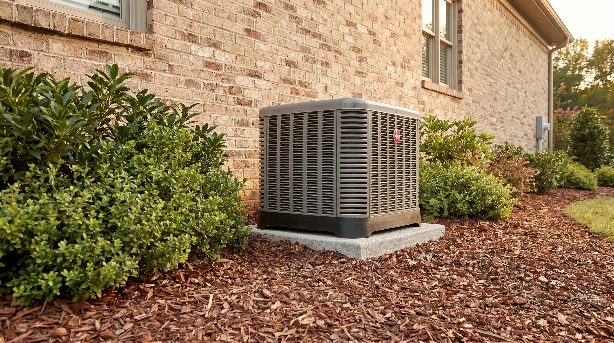

Same-day response. Upfront pricing. Certified local technicians.
Sunny Home Services is your top service provider for plumbing, heating, and cooling in Taylorsville, Utah. With a highly experienced team and a comprehensive range of services, we’re here to help with minor maintenance, serious issues, and everything in between. Learn about our HVAC and plumbing services and why Taylorsville puts its trust in our team.

With hot, arid summers and freezing winters, it’s no wonder that we rely on our heating and air conditioning systems so much in Taylorsville. Our team offers comprehensive HVAC services in Taylorsville, including:
Air conditioning is a non-negotiable during summertime in the Wasatch Front, and our team is here to ensure your cooling systems run as they should. We offer AC repair, installation, and ongoing maintenance to help you boost efficiency, extend system lifespans, and enjoy a comfortable space.
You need a reliable team for heating maintenance and HVAC repair in Taylorsville to prevent problems. Our team services electric and gas furnaces, providing urgent repairs, carefully sized installations, and annual heating maintenance.
Heat pumps offer flexible heating and cooling with impressive energy efficiency. Our team installs, repairs, and maintains heat pumps to ensure you’re getting the most out of these small but mighty systems.
Ductless mini-splits are a good way to keep smaller spaces cool without the need for an extensive ductwork installation. We can install these units in less than a day of work and are available year-round for repairs and proactive HVAC maintenance in Taylorsville.
We can improve your indoor air quality with whole-home air filtration systems, humidifiers, and more. This can help keep dust, seasonal pollen, and summer wildfire smoke out of your home.
We offer 24-hour heating and cooling services in Taylorsville. Call us anytime for furnace shutdowns, AC refrigerant leaks, or anything else that puts your safety at risk. We’ll arrive promptly after your call, thoroughly inspect the system, and provide in-depth emergency heating repairs or urgent AC repairs as needed.
In our years of servicing HVAC systems in the Taylorsville area, we’ve identified a few issues that pop up more often than others. These include:
If you’re noticing any of these symptoms with your home’s heating or cooling units, it likely means you’ll need to start thinking about a replacement:
If you’re dealing with any of these issues, contact the HVAC pros at Sunny Home Services to have your units assessed and to determine whether you’d benefit from a replacement unit.
We’re also proud to offer a full range of plumbing solutions to our Taylorsville community. Contact our local plumbers in the area for:
A clogged drain can render your sink, shower, or tub completely useless. Our drain cleaning team uses camera drain inspections, mechanical augers, and other methods to completely clear clogs and clean pipe walls, preventing recurring clogs and restoring flow.
Your water heater is another key system in your home, which means an issue here can seriously disrupt your routine. Our local plumbers are here to rapidly diagnose, repair, and maintain your tank-style water heater, restoring efficiency and ensuring a steady supply of hot water when you need it.
Tankless water heaters are highly efficient and provide nearly unlimited hot water, but they require a bit more care to perform at their best. We service tankless systems throughout Taylorsville, whether through proactive maintenance or reliable repairs.
As one of the top plumbing services in Taylorsville, we’re no stranger to the dangers of hidden leaks. We use advanced techniques to pinpoint, access, and repair leaks before they become serious plumbing emergencies. This prevents them from causing structural damage, compromising your foundation, or promoting hazardous mold growth in the home.
If your home’s sewer drain gets clogged, it can leave you vulnerable to burst pipes, seeping wastewater, or even a foul sewage backup. We offer trenchless sewer repair, sewer line cleaning, and other services to ensure wastewater always flows in the right direction, so you won’t need to call emergency plumbing services near you.
For stubborn drain clogs or roots of water-hungry tree species (such as willows, poplars, and silver maples), we may use hydro jetting to clear the issue. This tool uses high-pressure water to blast away clogs and scour the pipe walls without damaging the pipe itself.
If you’re concerned about pesticides or chemicals or simply want to remove excess minerals from your water, contact the plumbing team near you at Sunny Home Services to discuss whole-home water filtration or a water softener installation.
Taylorsville’s climate can put added stress on HVAC and plumbing systems. The hot, dry summers can strain air conditioners, while extremely cold winters can really test your furnace. Dust, cottonwood debris, and wildfire smoke are common concerns for HVAC air intakes too.
Pipes can freeze and burst during cold spells if they’re not properly insulated in your basement or crawlspace. Outdoor pipes can also sustain damage when the surrounding soil shifts during thaws. This means that hiring a local plumbing team (and getting annual tune-ups through a maintenance membership plan) is key.
To make sure the plumbing and HVAC services you need are in reach, we offer flexible financing and rotating special offers on many of our services. Get in touch to learn how we can help you save on the services your home needs.
Our team provides extensive experience and genuine dedication with every client we work with. Our technicians are trained, certified, and thoroughly vetted. And with so many glowing reviews from past customers in Taylorsville, you can rest assured that we’ve earned our reputation for quality and reliability.